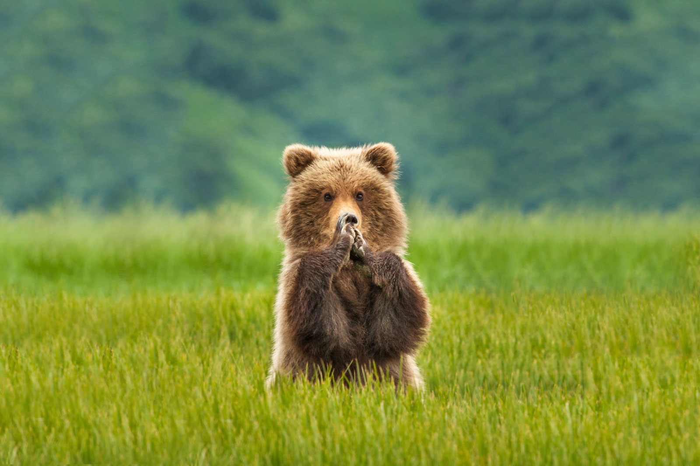

Meet the majestic Brown Bear, a symbol of strength and wilderness. As we admire these incredible creatures, let's also reflect on our impact.

From 1990 to 2019, there has been a remarkable increase in the threat on our Planets animals, by human build "airkillers". A dip in bird strike can be seen after 2019, as a result of the Covid-19 pandemic.
When we go on holiday in the summer/ late summer to have a break and enjoy ourselves, the animals suffer the most. Do we really have to kill, to have a good time?
I'ts not only birds who have been brutally slaugthered in a bird strike, but hundreds of different animal species can be seen as a victim in a neverending crime.
 Beautiful creatures as victims
Beautiful creatures as victims Meet the majestic Brown Bear, a symbol of strength and wilderness. As we admire these incredible creatures, let's also reflect on our impact.
Graceful and adorned with antlers, the Deer is a reminder of the beauty of nature. As we appreciate these gentle creatures, let's think about the environmental cost of air travel.
The playful Seal, a marine marvel, navigates both land and sea. To protect their habitats and the delicate balance of our oceans, let's reconsider our reliance on air travel.